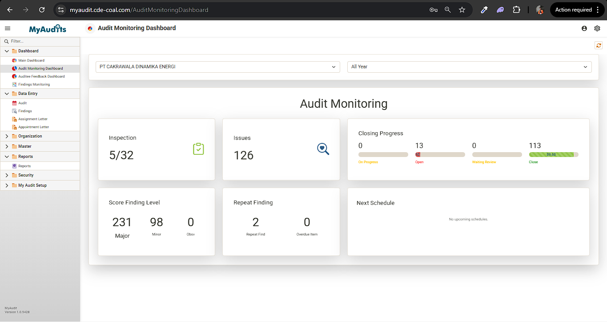
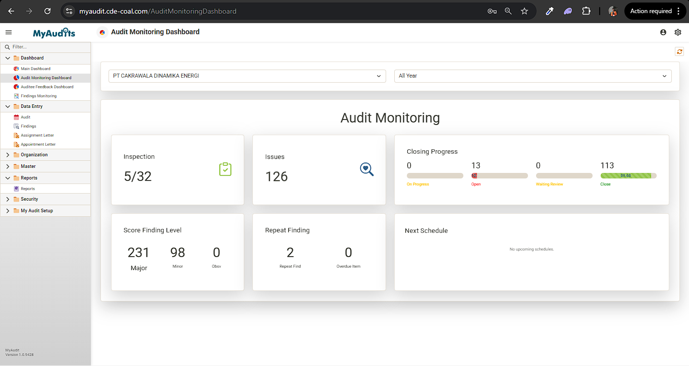

Septian Dwi Rahmanza
IT Developer | .NET, DevExpress & Blazor
Pengembang perangkat lunak dengan fokus pada ekosistem .NET, berpengalaman dalam menciptakan aplikasi web modern, REST API, serta dashboard interaktif menggunakan DevExpress untuk mendukung digitalisasi proses bisnis.
Mari TerhubungTentang Saya
Saya adalah seorang IT Developer yang bersemangat dalam mengembangkan solusi digital. Sebelumnya, saya berkontribusi di PT Cakrawala Dinamika Energi dengan fokus pada pengembangan platform audit internal menggunakan ASP.NET Core, Blazor, serta DevExpress XAF dengan bahasa pemrograman C#.
Dengan latar belakang di bidang Informatika dari Universitas Ahmad Dahlan, saya memiliki pengalaman beragam mulai dari pengembangan web, game development dengan Unity, hingga manajemen data. Saya selalu berusaha mengimplementasikan best practice untuk menghasilkan kode yang efisien, scalable, dan mudah dipelihara.
Keahlian Profesional
Pengalaman Kerja
IT Developer
PT Cakrawala Dinamika Energi · Full-time
Nov 2023 - Des 2025
- Mengembangkan platform MyAudits untuk digitalisasi proses audit internal.
- Menciptakan fitur baru berbasis ASP.NET Core, Blazor, dan SQL Server.
- Mengembangkan REST API untuk integrasi dengan aplikasi mobile.
- Membangun custom dashboard interaktif menggunakan Blazor untuk visualisasi data.
- Melakukan troubleshooting, bug fixing, dan maintenance rutin.
Game Developer
Ahmad Dahlan University · Freelance
Jul 2023 - Nov 2023 · 5 bln
- Membangun aplikasi media pembelajaran puisi dengan Augmented Reality menggunakan Unity dan C#.
- Membuat aset animasi 3D untuk kebutuhan Augmented Reality.
Data Management
PT. TELKOM AKSES · Internship
Nov 2022 - Des 2022 · 2 bln
- Membuat visualisasi data cuti karyawan menggunakan Google Data Studio.
- Melakukan input dan validasi data menggunakan Oracle Communication UIM.
- Mengembangkan proyek Bot Telegram untuk otomatisasi tugas.
Proyek Unggulan
 



MyAudits
Sistem manajemen audit internal terintegrasi yang dirancang untuk mendigitalisasi seluruh siklus audit, mulai dari perencanaan hingga pemantauan tindak lanjut temuan secara real-time.
Interactive Dashboards: Visualisasi data temuan (Major/Minor) menggunakan Donut Charts dan Bar Charts untuk memudahkan pengambilan keputusan manajemen.
Monitoring Status: Fitur pelacakan progres perbaikan temuan dengan status Open, On-Progress, dan Closed.
Reporting: Generasi laporan otomatis yang detail mencakup Audit Unit, Findings, dan Due Date.
API Integration: Pengembangan RESTful API untuk integrasi yang lancar dengan aplikasi seluler.
MOP (Mining Operation)
Platform ERP komprehensif yang dirancang untuk mengelola seluruh aspek operasional pertambangan secara end-to-end, mulai dari perencanaan tambang hingga pemantauan produksi harian secara presisi.
Production Monitoring: Dashboard visual menggunakan grafik gauge untuk membandingkan target (Plan) vs realisasi (Actual) pada aktivitas OB Removal dan Coal Getting.
Daily Planning: Manajemen perencanaan harian yang terintegrasi dengan berbagai entitas perusahaan untuk sinkronisasi target tambang.
Fleet Management: Pemantauan status unit alat berat (Digger, Hauler, Support) dan pencatatan Equipment Time Sheet yang akurat.


Riwayat Pendidikan
Ahmad Dahlan University Yogyakarta Indonesia
Gelar Sarjana, Informatika
Sep 2019 - Jul 2023
Aktivitas: DPM FTI, IMM FTI, Asisten Praktikum Pemrograman Mobile.
Tertarik Bekerja Sama?
Saya selalu terbuka untuk diskusi mengenai proyek baru, peluang kolaborasi, atau sekadar bertukar pikiran tentang teknologi. Jangan ragu untuk menghubungi saya.
Kirim Email